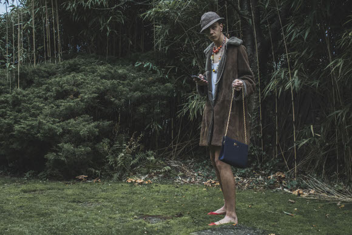
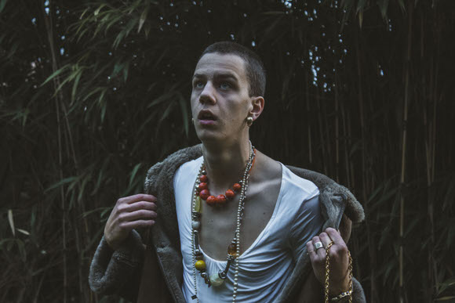
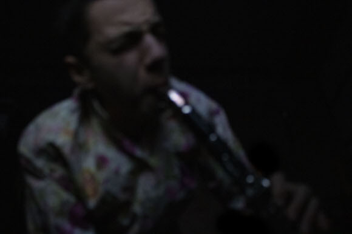
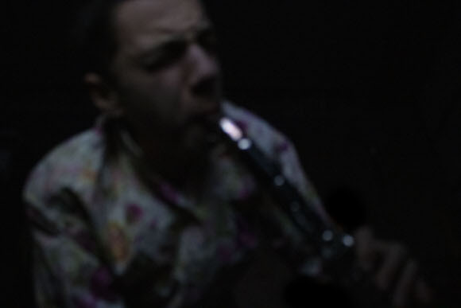
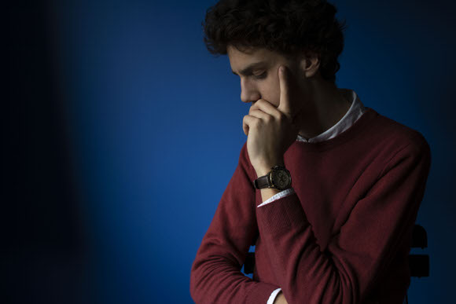

 


Wie is Haberol Tenor
Afkomst
Ik ben afkomstig uit het verre platteland in het westen van België. Mijn famillie woont daar al zes generaties lang. Honderd jaar terug was het volk de Haberoleanen gevestigd op de faroër eilanden en telde onze bevolking een duizendtal mensen. Door de vele oorlogen tussen andere volkeren zijn de Haberoleanen met de weinige overlevers moeten vluchten naar België.
Naam
Door de vele ruzies met andere volkeren en de plaatselijke Belgen moesten we onze achternaam veranderen. 'Tenor' was de meest geschikte omdat we een laag stemgeluid hebben. Mijn voornaam 'Habereol' is een verwijzign naar onze voorouders die dit als achternaam droegen. Ik ben heel trots op deze naam omdat ik trots ben op mijn voorouders.
Roots
Haberoleaan
85%
Belg
40%
Faroëreaan
2%
Beroep
- Tenorsaxofonist
- Haberol ensamble
- 25 jaar ervaring
- Historicus
- Studie van de Haberoleanen
- 20 jaar ervaring
- universiteit Leuven